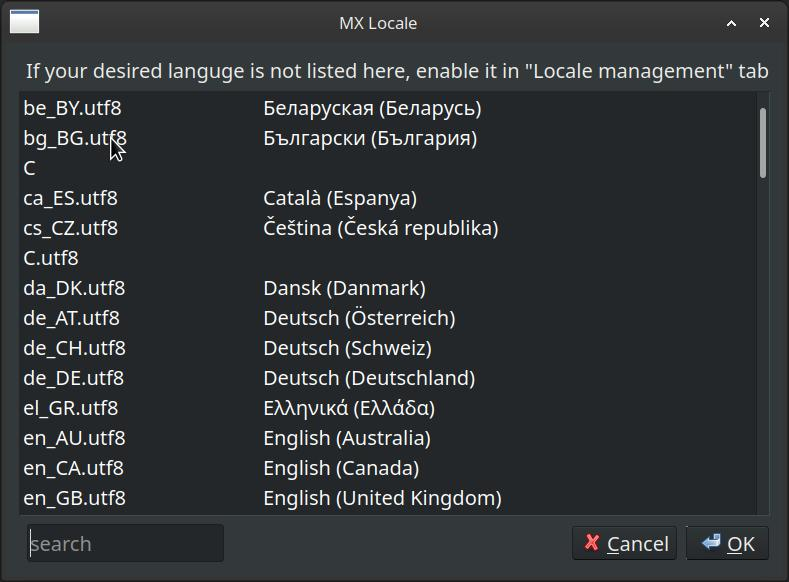
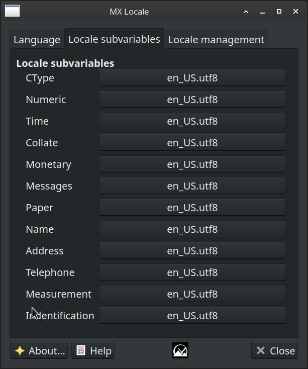
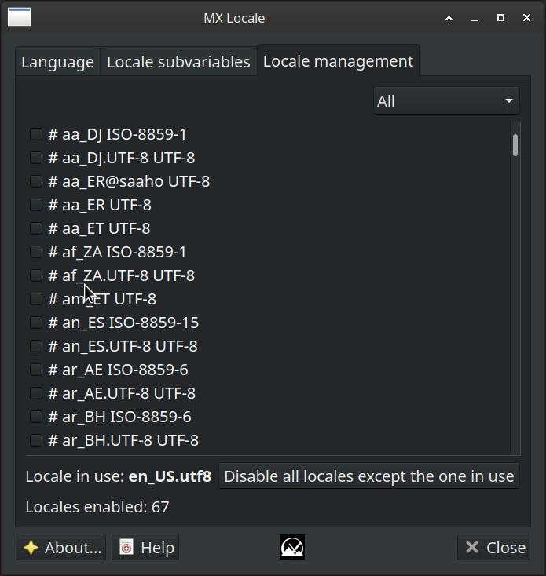

MX Locale allows the user to perform localization functions via a gui selection process.
The language tab allows the user to choose the system-wide default language.
Activating the locale button will bring up a selection dialog.
The locale subvariables tab allows the user to define on a per-variable basis different locales for the various variables.
The locale management tab allows the user to add and subtract precompiled locale caches. This is very similar to the functions a user would get by running dpkg-reconfigure locales.
There is also a function to remove all locales except the current locale.
License: here.